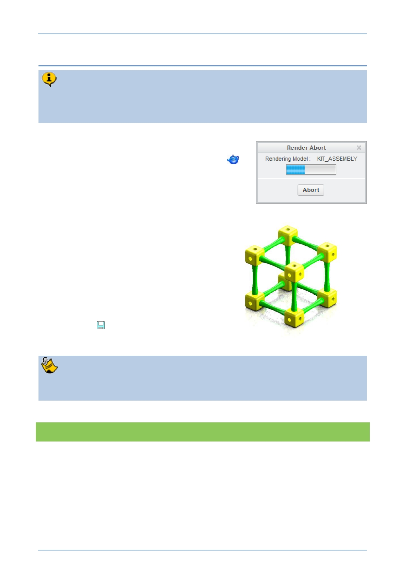

PTC Academic Program
Step 2: Draft render
Draft render will let you see whether the changes you made to the Scene settings
are giving you the desired effect. Dra ft render doesn’t take long and gives you
the opportunity to go back and quickly try out other scenes and settings.
1. Draft render:
In the Render tab, click on Render Window
to perform a Draft render.
There will be a short wait with progress reported
in the Render Abort dialog box.
When the draft render finishes, the graphics
area will display a grainy image representing
the effects you have applied.
If you are not happy with the way your
model looks, try applying a different
scene.
Once you are happy with the draft
render you can continue to refine the
quality of the render.
2. Click Save
to save your work.
Each time you change the scene you also need to snap the floor to the model
before trying the render.
What have you learned?
Draft render.
Scenes – Applying a new scene, saving with model, positioning the floor.
© 2012 PTC
Creo Parametric 2.0 Primer
Page 85